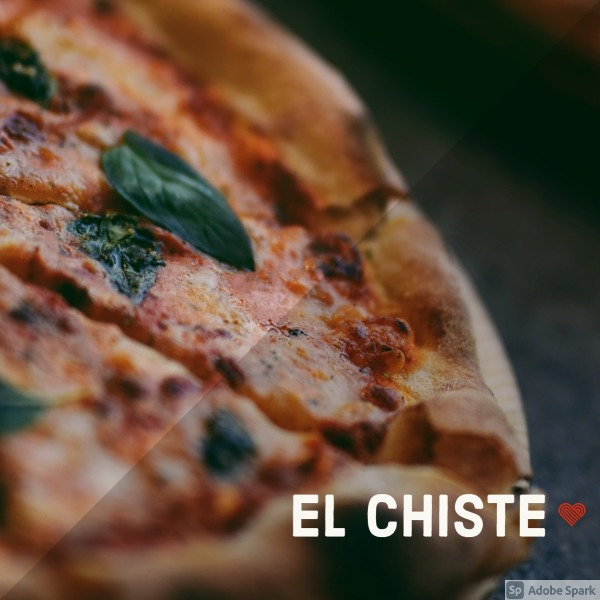

En la Boca, la Av. Almirante Brown ("Bron" según el decir de los vecinos), luce orgullosamente las
mejores pizzerías del barrio, y sinlugar a dudas, Banchero es la más tradicional.
Agustín Banchero llegó a la Boca del Riachuelo en 1893, procedente de su Génova natal. Instaló una
pequeña panadería en la calle Olavarría en la que trabajó con su hijo Juan. Allí nació la fugazza con
queso; rápidamente se convirtió en verdadero patrimonio gastronómico de La Boca, recorrió y triunfó en
todo el mundo.
Direccion: Av. Almirante Brown 1200
Hoy El Fortín es una famosa pizzería del barrio de Monte Castro en su límite con Villa
Luro, con una clientela tan consecuente que podría ser comparada con una hinchada.
Fundada en 1947 por los señores Amigo y Fernández, obviamente "hinchas" de Vélez, es uno
de los buscados reductos con horno a leña. Mide 3 metros de diámetro, con capacidad para
25 moldes grandes. Se calienta usando quebracho y le dan luz con madera de álamo y
sauce.
Direccion:Av. Alvarez Jonte 5299
Hoy El Cedrón es la más famosa pizzería del tradicional barrio
de Mataderos, concurrida por un numeroso público "local" (como
el reconocido historiador Ofelio Vecchio) y otro que llega a comprobar el prestigio que ha
trascendido los límites barriales. Su esquina es conocida como esquina Breccia, debido a la
placa allí ubicada en 1994 que homenajea al dibujante Alberto Breccia.
Direccion:Av. Juan B. Alberdi 6101

en el histórico barrio de Montserrat, en el local de
Moreno 467, entre Bolívar y Defensa, donde funciona desde 1989 la pizzería El
Chiste, en una manzana muy rica desde el punto de vista patrimonial si
consideramos que en ella conviven: la elegante farmacia La Estrella, el Museo de
la Ciudad, la casa en que vivió durante su infancia y juventud la recordada
actriz Niní Marshall, la Librería de Avila (ex Librería del Colegio) y el Café
Notable La Puerto Rico.
Direccion:Moreno 467
La pizzería del catalán Espinach y del vasco Urcola abrió sus puertas en
el local de Corrientes y Libertad, allí suele asegurarse que don
Alberto Vaccarezza escribía cuartetas espontáneas en las paredes,
de ahí que los parroquianos comenzaron a llamarla "La casa de las
cuartetas". A raíz de ello sus dueños la bautizaron oficialmente Las
Cuartetas